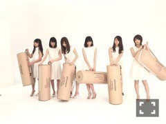

| 2016/02 25 Thu | ピンチ。698回目 |
ギガ
22日、乃木坂46は
デビュー4周年を迎えました。
46時間TV
たくさんのスタッフさんが寝ずに
頑張ってくださいました。
MCを務めたメンバーや
地方に飛んで声を集めたメンバー、
地方まで駆けつけてくれたファンのみなさん
最後まで見てくださったみなさん、
みんなの力で最後まで
駆け抜けることができました！
本当にありがとうございました。
4周年になる瞬間をみんなで
迎えられたことがなにより嬉しかった〜
新しいかたちで4周年を迎えたので、
実感が湧きません。
5年目が始まりました。
気持ちを常に上げていけるように頑張ります。
46時間TVを振り返ると！
ライブ楽しかったです。
やっぱりライブ！！ライブしたいよ！
乃木坂電視台は
20日20歳になりたて、はじめてのお酒。
これから少しずつ慣れれば！！
まず酔っ払う感覚を知らないといけない。
MdN×伊藤万理華コラボlabo！
本信編集長と対談でした！
うきうきしてたの伝わったかな？
これからも連載
MARIKA meets CREATORS
よろしくお願い致します(>_<)
MdN EXTRA Vol.3
「乃木坂46 映像の世界」
読んでない方におすすめです＼(^o^)／
人狼ゲームは二回戦とも人狼。
嘘をつけないというか、
ヘタなんだと気が付いた深夜。
付いた嘘もうまく誤魔化せる
センスがないみたいです。

ボーリング大会の装いは、
ヤンキーみたいな耳がポイントです。
赤ちゃん人形が2体ずついます。
まさかの優勝びっくりしました！！
お食事券は母に渡しました、、(^o^)
それからサシトーク、、
カラオケ、グッズ開発、、
このように、なんやかんや
ほとんどの企画には参加できました！
途中、らじらー！に出演して、
日芽香と46時間TVに帰ってくるなど、
スリルがあって本当に楽しかったー
ケーキのサプライズ嬉しかったし、
最後に完成したのぎ声リレー、
グッときました。
たくさんの方に支えられてるんだと
いうのを改めて実感しました。
どちらも良い誕生日を迎えられた！！
20歳がんばるー
20歳かー
21日のさぬき映画祭、
舞台挨拶に登壇できずでした(>_<)
映画「アニバーサリー」
いかがでしたか？
私も早く観たいなあ

ファッションヘッドラインさんの
インタビュー受けました！
ミキオサカベ×ジェニーファックス
アトリエにおじゃましました、、
伊勢丹コラボ商品は3月2日から！
当日、新潟伊勢丹に飛びます∠( 'ω')／

エアウィーヴ×乃木坂46
よろしくお願いいたします。
明日のMステ、
新曲初披露です！
まりか
コメント(401)
2016/02/25 23:18